Find the distance between any point P and \(y = x^2 + 5\) → Parabola shifted up by 5
In other words, find the point on the curve where a line segment connecting P and the curve is perpendicular to the curve.
There are multiple ways to solve this problem for parabolas and any kind of function, both Numerical and Analytical. These solution methods, as well as coded equivalents for numerical algorithms are presented below.
Distance function:
\[ d = \sqrt{(x - x_0)^2 + (y - y_0)^2} \]To avoid dealing with the square root, knowing both functions have the same minimium, minimize the distance squared instead:
\[ D(x) = (x - x_0)^2 + (y - y_0)^2 \]Sub in the parabola:
\[ D(x) = (x - x_0)^2 + (x^2 + 5 - y_0)^2 \]Differentiate \(D(x)\) to optimize:
\[ \begin{aligned} D'(x) &= 2(x - x_0) + 2(x^2 + 5 - y_0)(2x) \\ D'(x) &= 2x - 2x_0 + 4x^3 + 20x - 4xy_0 \\ D'(x) &= 2\left(2x^3 + (11 - 2y_0)x - x_0\right) \end{aligned} \]Set derivative to 0 to find minimum:
\[ 0 = 2x^3 + (11 - 2y_0)x - x_0 \]Logically, we know any solutions to this equation will be a minimum, because the maximum distance between a point and any function that goes to infinity, like a parabola, will be infinite.
Similarly, because we know \(D(x)\) physically represents the squared distance to a function, there will have to be at least 1 real solution.
Solve for \(x\) for the following points: \([(0,0);\ (-4,0);\ (-8,0);\ (2,0);\ (6,0)]\)
Using a calculator to solve for roots:
\[ x = -0.3555 \quad (\text{2 complex}) \] \[ \begin{aligned} D(-0.3555) &= (-0.3555 - (-4))^2 + ((-0.3555)^2 + 5 - 0)^2 \\ &= 39.5622 \\ d(-4,0) &= \sqrt{D(-0.3555)} \\ d &= 6.2898 \end{aligned} \]Calculator:
\[ x = -0.6721 \quad (\text{2 complex}) \] \[ \begin{aligned} D(-0.6721) &= (-0.6721 - (-8))^2 + ((-0.6721)^2 + 5 - 0)^2 \\ &= 83.4194 \\ d(-8,0) &= \sqrt{D(-0.6721)} \\ d &= 9.1334 \end{aligned} \]Calculator:
\[ x = 0.1807 \quad (\text{2 complex}) \] \[ \begin{aligned} D(0.1807) &= (0.1807 - 2)^2 + ((0.1807)^2 + 5 - 0)^2 \\ &= 28.6374 \\ d(2,0) &= \sqrt{D(0.1807)} \\ d &= 5.3514 \end{aligned} \]Calculator:
\[ x = 0.5199 \quad (\text{2 complex}) \] \[ \begin{aligned} D(0.5199) &= (0.5199 - 6)^2 + ((0.5199)^2 + 5 - 0)^2 \\ &= 57.8075 \\ d(6,0) &= \sqrt{D(0.5199)} \\ d &= 7.6031 \end{aligned} \]| Point | \(\mathbf{d}\) |
|---|---|
| \((0, 0)\) | 5 |
| \((-4, 0)\) | 6.2898 |
| \((-8, 0)\) | 9.1334 |
| \((2, 0)\) | 5.3514 |
| \((6, 0)\) | 7.6031 |
Newton-Raphson requires the second derivative of \(D(x)\), which is determined below:
\[ \begin{aligned} y &= x^2 + 5 \\ D(x) &= (x - x_0)^2 + (x^2 + 5 - y_0)^2 \\ D'(x) &= 4x^3 + (22 - 4y_0)x - 2x_0 \quad (\text{from above}) \\ D''(x) &= 12x^2 + 22 - 4y_0 \end{aligned} \]For each iteration, to find the next guess, the first derivative divided by the second derivative of \(D(x)\) is subtracted from the previous guess. This is to find the root of \(D'(x)\), which is where the minimum of \(D(x)\) occurs.
For the analytical approach, the distances were determined to 4 decimal places, so the algorithm will be applied to that accuracy by hand. Finer accuracy can be achieved with a computer.
Starting guess: \(x = 0\)
Find distance for \([(0,0);\ (-4,0);\ (-8,0);\ (2,0);\ (6,0)]\)
No change.
Now calculate d:
\[ \begin{aligned} D(0) &= (0 - 0)^2 + (0^2 + 5 - 0)^2 = 25 \\ d(0,0) &= \sqrt{D(0)} \\ d(0,0) &= 5 \end{aligned} \]From above:
\[ \begin{aligned} D(-0.3555) &= 39.5622 \\ d(-4,0) &= 6.2898 \end{aligned} \]From above:
\[ \begin{aligned} D(-0.6721) &= 83.4194 \\ d(-8,0) &= 9.1334 \end{aligned} \]From above:
\[ \begin{aligned} D(0.1807) &= 28.6374 \\ d(2,0) &= 5.3514 \end{aligned} \]From above:
\[ \begin{aligned} D(0.5199) &= 57.8075 \\ d(6,0) &= 7.6031 \end{aligned} \]The Algorithm above was implemented in Python, and run for \(f(x) = x^2 + 5\). Additional points were added to prove the code works for points in all quadrants.
\[ \text{Points: [(0,0); (-4,0); (-8,0); (2,0); (6,0); (2,2); (-2.5,6); (0,5.4); (0,-1.3); (-5,-4)]} \]After that, the algorithm was run on other kinds of functions, to prove that it works in general:
\[ \begin{aligned} g(x) &= 3x^3 - 13x^2 + x - 6 \\ e(x) &= -1.5e^{2x} + 0.5 \\ c(x) &= 2\cos(x - 1) + 1 \\ l(x) &= 0.5\ln(x) \end{aligned} \]1. For some of the functions, especially those with deeper wells like the cubic, or periodicity like cosine, the initial guess needed to be close to the true value, so the algorithm would converge to the correct value of x. This intial guess was determined through inspection.
2. For functions with restricted domain, like ln(x), the algorithm was modified to stop iterating if the next estimate of x was ever outside the domain. This also required initial guesses close to the true value, especially for points on the left of the y-axis.
The following are the results of the algorithm for the points above:
| point | x | d | iterations |
|---|---|---|---|
| (0, 0) | 0.0000000 | 5.0000000 | 2 |
| (-4, 0) | -0.3554697 | 6.2898454 | 5 |
| (-8, 0) | -0.6720781 | 9.1334195 | 6 |
| (2, 0) | 0.1807446 | 5.3513964 | 5 |
| (6, 0) | 0.5199037 | 7.6031254 | 5 |
| (2, 2) | 0.2794773 | 3.5263217 | 5 |
| (-2.5, 6) | -1.2310224 | 1.3696561 | 27 |
| (0, 5.4) | 0.0000000 | 0.4000000 | 2 |
| (0, -1.3) | 0.0000000 | 6.3000000 | 2 |
| (-5, -4) | -0.2612803 | 10.2317612 | 5 |
Below is a plot of all the points and their shortest distance to f(x):
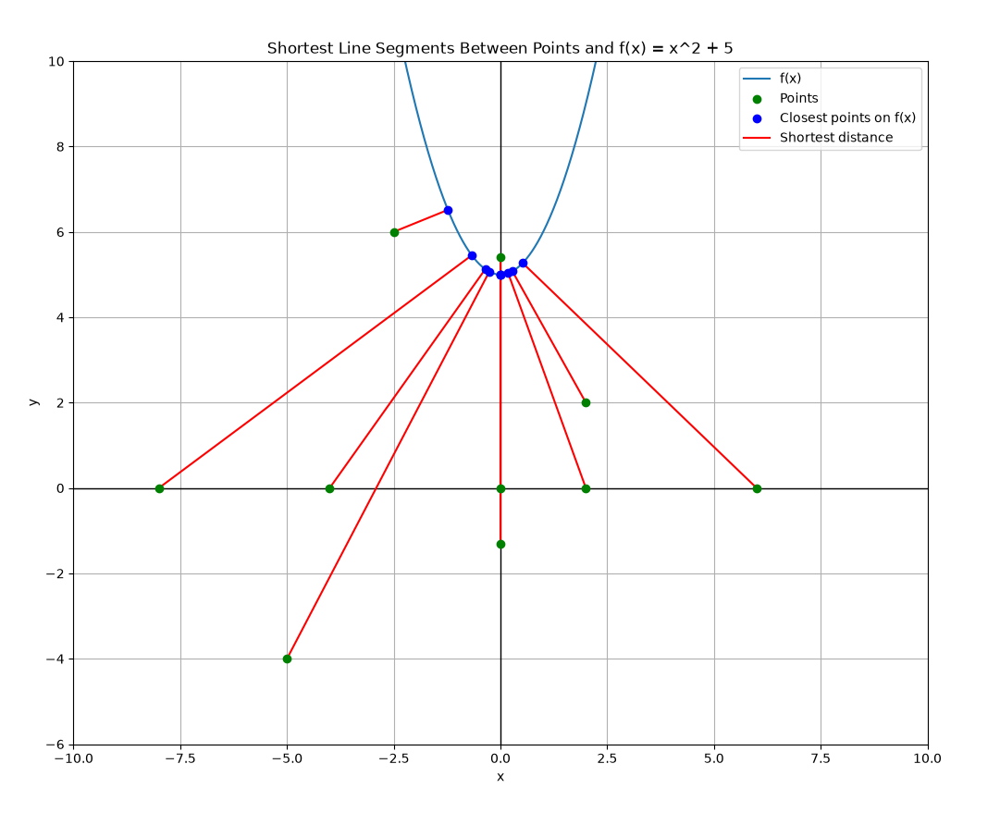
The following are the results of the algorithm for the points above:
| point | x | d | iterations |
|---|---|---|---|
| (0, 0) | 4.3607665 | 4.3613978 | 7 |
| (-4, 0) | 0.0127493 | 7.2093385 | 4 |
| (-8, 0) | -0.0125609 | 9.9987405 | 4 |
| (2, 0) | 4.3613456 | 2.3616871 | 7 |
| (6, 0) | 4.3625012 | 1.6377351 | 7 |
| (2, 2) | 4.3948678 | 2.3951942 | 7 |
| (-2.5, 6) | 0.0306634 | 12.2458139 | 4 |
| (0, 5.4) | 4.4491974 | 4.4497495 | 7 |
| (0, -1.3) | 4.3384032 | 4.3390571 | 8 |
| (-5, -4) | -0.0517967 | 5.3703506 | 5 |
Below is a plot of all the points and their shortest distance to g(x):
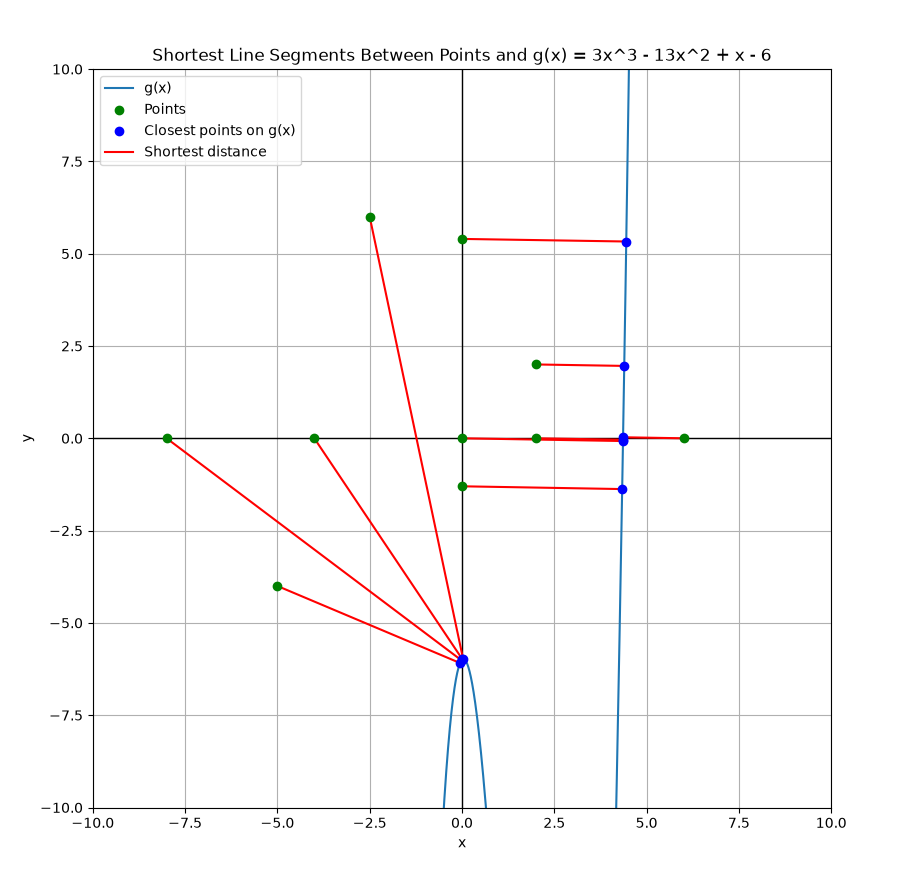
The following are the results of the algorithm for the points above:
| point | x | d | iterations |
|---|---|---|---|
| (0, 0) | -0.3537764 | 0.4270942 | 7 |
| (-4, 0) | -3.9994968 | 0.4994966 | 3 |
| (-8, 0) | -7.9999998 | 0.4999998 | 3 |
| (2, 0) | -0.0722603 | 2.2206565 | 14 |
| (6, 0) | 0.1388294 | 6.0451534 | 29 |
| (2, 2) | -0.4665013 | 3.2329497 | 15 |
| (-2.5, 6) | -2.5925338 | 5.5091765 | 5 |
| (0, 5.4) | -1.2463238 | 5.1763174 | 8 |
| (0, -1.3) | 0.0845087 | 0.0877931 | 6 |
| (-5, -4) | -4.9993864 | 4.4999319 | 3 |
Below is a plot of all the points and their shortest distance to e(x):
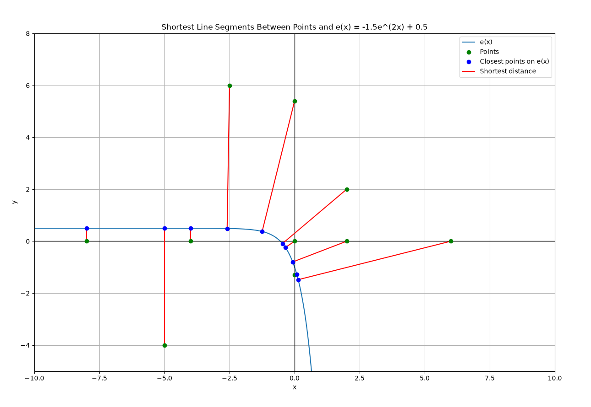
The following are the results of the algorithm for the points above:
| point | x | d | iterations |
|---|---|---|---|
| (0, 0) | -0.8526066 | 0.9612000 | 15 |
| (-4, 0) | -3.3723236 | 0.7104940 | 6 |
| (-8, 0) | -7.5556026 | 0.5311493 | 5 |
| (2, 0) | 2.8526066 | 0.9612000 | 15 |
| (6, 0) | 5.3723236 | 0.7104940 | 6 |
| (2, 2) | 2.0353057 | 0.0408389 | 5 |
| (-2.5, 6) | -4.8934743 | 3.9561321 | 5 |
| (0, 5.4) | 0.8286160 | 2.5667306 | 5 |
| (0, -1.3) | -1.3321763 | 1.6190690 | 27 |
| (-5, -4) | -2.5414493 | 4.0019945 | 4 |
Below is a plot of all the points and their shortest distance to c(x):
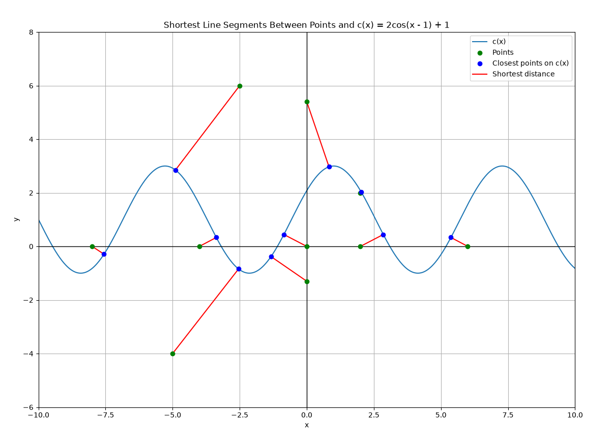
Further, here is another plot showing the iteration steps for point (0, 5.4) to c(x). Because some of the later iterations are very close, the coordinates aren't entirely visible, so they're listed in the table below.
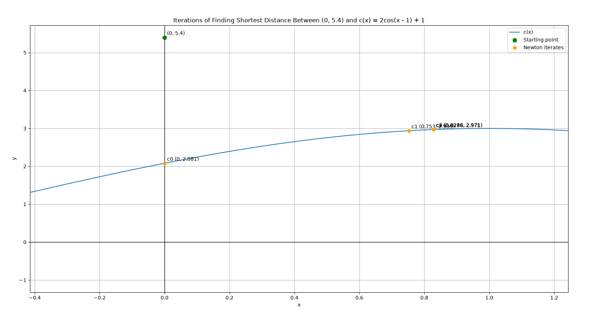
| iteration | point on c(x) |
|---|---|
| c0 | (0.0, 2.0806046) |
| c1 | (0.7529537, 2.9392779) |
| c2 | (0.8279037, 2.9704559) |
| c3 | (0.8286160, 2.9706993) |
| c4 | (0.8286160, 2.9706994) |
The following are the results of the algorithm for the points above:
| point | x | d | iterations |
|---|---|---|---|
| (0, 0) | 0.4480251 | 0.6015738 | 8 |
| (-4, 0) | 0.1256782 | 4.2540124 | 6 |
| (-8, 0) | 0.0786766 | 8.1780791 | 6 |
| (2, 0) | 1.9151763 | 0.3357949 | 5 |
| (6, 0) | 5.9249287 | 0.8927463 | 5 |
| (2, 2) | 2.3370769 | 1.6112036 | 6 |
| (-2.5, 6) | 0.8926371 | 6.9422376 | 5 |
| (0, 5.4) | 1.6066910 | 5.4071353 | 6 |
| (0, -1.3) | 0.0727190 | 0.0734841 | 7 |
| (-5, -4) | 0.0003332 | 5.0003343 | 12 |
Below is a plot of all the points and their shortest distance to l(x):
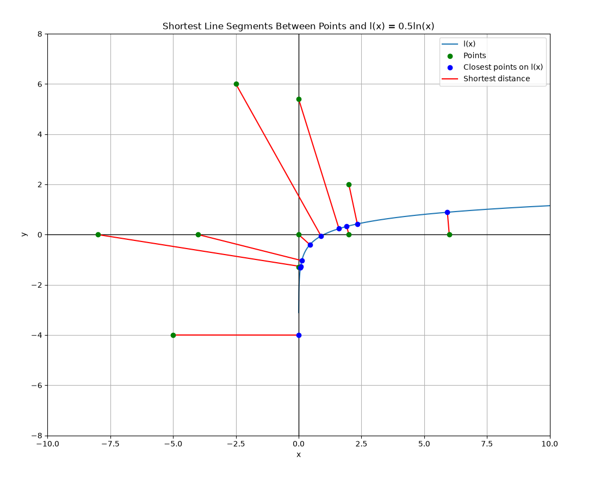
This algorithm works by repeatedly narrowing down a section [a,b], where the solution is known to be, by a factor of phi until the section is within a specified tolerance around the solution x.
\[ \qquad D(x) = (x - x_0)^2 + (x^2 + 5 - y_0)^2 \] \[ \begin{aligned} \text{phi} &\rightarrow \varphi = \frac{1 + \sqrt{5}}{2} = 1.618034 \\ \text{resphi} &\rightarrow \varphi_{res} = 2 - \varphi = 0.381966 \end{aligned} \] \[ \begin{aligned} x_1 &= a + \varphi_{res}(b - a) & x_2 &= b - \varphi_{res}(b - a) \end{aligned} \]For points \([(0,0);\ (-4,0);\ (-8,0);\ (2,0);\ (6,0)]\)
i)
\[ \begin{aligned} f_{x_1} &= D(x_1) = (-2.36068)^2 + ((-2.36068)^2 + 5)^2 \\ D(x_1) &= 117.3571 \\ f_{x_2} &= D(x_2) = (2.36068)^2 + ((2.36068)^2 + 5)^2 \\ D(x_2) &= 117.3571 \end{aligned} \]\(f_{x_1} = f_{x_2}\):
\[ \begin{aligned} a &= x_1 = -2.36068 \qquad f_{x_1} = f_{x_2} = 117.3571 \\ x_1 &= x_2 = 2.36068 \\ x_2 &= 10 - 0.381966(10 - (-2.36068)) \\ x_2 &= 5.27864 \end{aligned} \]ii)
\[ \begin{aligned} f_{x_2} &= D(x_2) = (5.27864)^2 + ((5.27864)^2 + 5)^2 \\ &= 1107.9095 \end{aligned} \]\(f_{x_1} < f_{x_2}\):
\[ \begin{aligned} b &= x_2 = 5.27864 \qquad f_{x_2} = f_{x_1} = 117.3571 \\ x_2 &= x_1 = 2.36068 \\ x_1 &= -2.36068 + 0.381966(5.27864 - (-2.36068)) \\ x_1 &= 0.55728 \end{aligned} \]i)
\[ \begin{aligned} f_{x_1} &= D(x_1) = (-0.11803 + 4)^2 + ((-0.11803)^2 + 5)^2 \\ &= 40.2092 \\ f_{x_2} &= D(x_2) = (0.11803 + 4)^2 + ((0.11803)^2 + 5)^2 \\ &= 42.6977 \end{aligned} \]\(f_{x_1} < f_{x_2}\):
\[ \begin{aligned} b &= x_2 = 0.11803 \qquad f_{x_2} = f_{x_1} = 40.2092 \\ x_2 &= x_1 = -0.11803 \\ x_1 &= -0.5 + 0.381966(0.11803 - (-0.5)) \\ x_1 &= -0.26393 \end{aligned} \]ii)
\[ \begin{aligned} f_{x_1} &= D(x_1) = (-0.26393 + 4)^2 + ((-0.26393)^2 + 5)^2 \\ &= 39.6597 \end{aligned} \]\(f_{x_1} < f_{x_2}\):
\[ \begin{aligned} b &= x_2 = -0.11803 \qquad f_{x_2} = f_{x_1} = 39.6597 \\ x_2 &= x_1 = -0.26393 \\ x_1 &= -0.5 + 0.381966(-0.11803 + 0.5) \\ x_1 &= -0.35410 \end{aligned} \]i)
\[ \begin{aligned} f_{x_1} &= D(x_1) = (-0.43262 + 8)^2 + ((-0.43262)^2 + 5)^2 \\ &= 84.1718 \\ f_{x_2} &= D(x_2) = (-0.26738 + 8)^2 + ((-0.26738)^2 + 5)^2 \\ &= 85.5135 \end{aligned} \]\(f_{x_1} < f_{x_2}\):
\[ \begin{aligned} b &= x_2 = -0.26738 \qquad f_{x_2} = f_{x_1} = 84.1718 \\ x_2 &= x_1 = -0.43262 \\ x_1 &= -0.7 + 0.381966(-0.26738 + 0.7) \\ x_1 &= -0.53475 \end{aligned} \]ii)
\[ \begin{aligned} f_{x_1} &= D(x_1) = (-0.53475 + 8)^2 + ((-0.53475)^2 + 5)^2 \\ &= 83.6713 \end{aligned} \]\(f_{x_1} < f_{x_2}\):
\[ \begin{aligned} b &= x_2 = -0.43262 \qquad f_{x_2} = f_{x_1} = 83.6713 \\ x_2 &= x_1 = -0.53475 \\ x_1 &= -0.7 + 0.381966(-0.43262 + 0.7) \end{aligned} \]i)
\[ \begin{aligned} f_{x_1} &= D(x_1) = (0.076393 - 2)^2 + (0.076393^2 + 5)^2 \\ &= 28.7587 \\ f_{x_2} &= D(x_2) = (0.12361 - 2)^2 + (0.12361^2 + 5)^2 \\ &= 28.6739 \end{aligned} \]\(f_{x_2} < f_{x_1}\):
\[ \begin{aligned} a &= x_1 = 0.076393 \qquad f_{x_1} = f_{x_2} = 28.6739 \\ x_1 &= x_2 = 0.12361 \\ x_2 &= 0.2 - 0.381966(0.2 - 0.076393) \\ x_2 &= 0.15279 \end{aligned} \]ii)
\[ \begin{aligned} f_{x_2} &= D(x_2) = (0.15279 - 2)^2 + (0.15279^2 + 5)^2 \\ &= 28.6462 \end{aligned} \]\(f_{x_2} < f_{x_1}\):
\[ \begin{aligned} a &= x_1 = 0.12361 \qquad f_{x_1} = f_{x_2} = 28.6462 \\ x_1 &= x_2 = 0.15279 \\ x_2 &= 0.2 - 0.381966(0.2 - 0.12361) \\ x_2 &= 0.17082 \end{aligned} \]i)
\[ \begin{aligned} f_{x_1} &= D(x_1) = (0.22918 - 6)^2 + (0.22918^2 + 5)^2 \\ &= 58.8304 \\ f_{x_2} &= D(x_2) = (0.37082 - 6)^2 + (0.37082^2 + 5)^2 \\ &= 58.0816 \end{aligned} \]\(f_{x_2} < f_{x_1}\):
\[ \begin{aligned} a &= x_1 = 0.22918 \qquad f_{x_1} = f_{x_2} = 58.0816 \\ x_1 &= x_2 = 0.37082 \\ x_2 &= 0.6 - 0.381966(0.6 - 0.22918) \\ x_2 &= 0.45836 \end{aligned} \]ii)
\[ \begin{aligned} f_{x_2} &= D(x_2) = (0.45836 - 6)^2 + (0.45836^2 + 5)^2 \\ &= 57.8549 \end{aligned} \]\(f_{x_2} < f_{x_1}\):
\[ \begin{aligned} a &= x_1 = 0.37082 \qquad f_{x_1} = f_{x_2} = 57.8549 \\ x_1 &= x_2 = 0.45836 \\ x_2 &= 0.6 - 0.381966(0.6 - 0.37082) \\ x_2 &= 0.51246 \end{aligned} \]The Algorithm above was implemented in Python, and run for the following functions and points (Same as Newton-Raphson):
\[ \begin{aligned} f(x) &= x^2 + 5 \\ g(x) &= 3x^3 - 13x^2 + x - 6 \\ e(x) &= -1.5e^{2x} + 0.5 \\ c(x) &= 2\cos(x - 1) + 1 \\ l(x) &= 0.5\ln(x) \end{aligned} \] \[ \text{Points: [(0,0); (-4,0); (-8,0); (2,0); (6,0); (2,2); (-2.5,6); (0,5.4); (0,-1.3); (-5,-4)]} \]1. For some of the functions, especially those with deeper wells like the cubic, or periodicity like cosine, the initial section sometimes needed to closely bound the true value, which was determined through inspection.
2. For functions with restricted domain, like ln(x), the given section to search must be fully within the domain of the function.
The following are the results of the algorithm for the points above:
| point | initial section | x | d | iterations |
|---|---|---|---|---|
| (0, 0) | [-2, 2] | 0.0000000 | 5.0000000 | 38 |
| (-4, 0) | [-2, 2] | -0.3554697 | 6.2898454 | 38 |
| (-8, 0) | [-2, 2] | -0.6720781 | 9.1334195 | 38 |
| (2, 0) | [-2, 2] | 0.1807446 | 5.3513964 | 38 |
| (6, 0) | [-2, 2] | 0.5199037 | 7.6031254 | 38 |
| (2, 2) | [-2, 2] | 0.2794774 | 3.5263217 | 38 |
| (-2.5, 6) | [-2, 2] | -1.2310224 | 1.3696561 | 38 |
| (0, 5.4) | [-2, 2] | 0.0000000 | 0.4000000 | 38 |
| (0, -1.3) | [-2, 2] | 0.0000000 | 6.3000000 | 38 |
| (-5, -4) | [-2, 2] | -0.2612803 | 10.2317612 | 38 |
Below is a plot of all the points and their shortest distance to f(x):
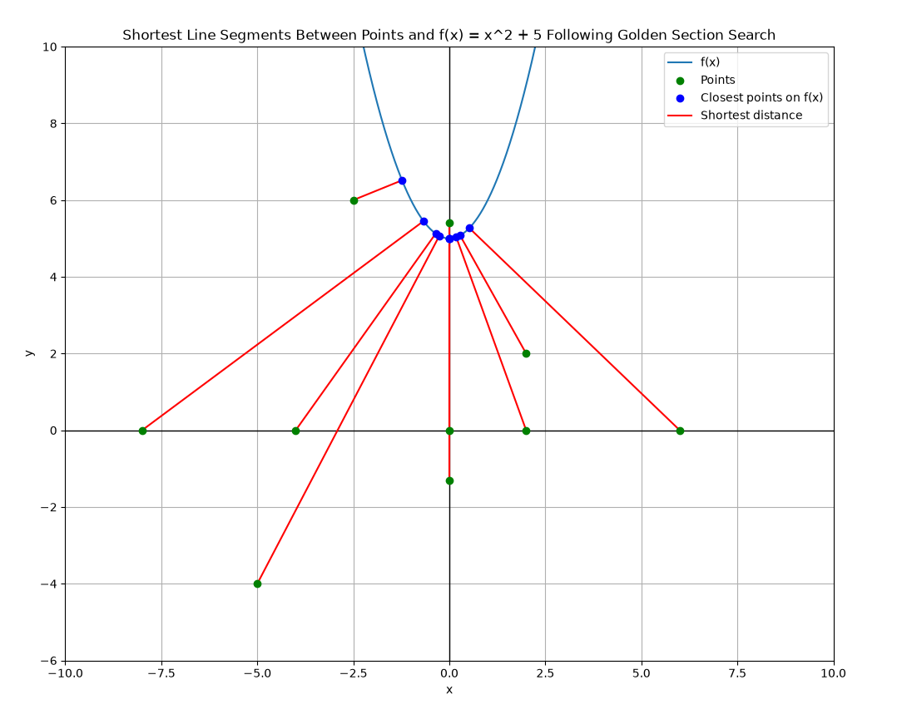
The following are the results of the algorithm for the points above:
| point | initial section | x | d | iterations |
|---|---|---|---|---|
| (0, 0) | [4, 5] | 4.3607665 | 4.3613978 | 35 |
| (-4, 0) | [-0.5, 0.5] | 0.0127494 | 7.2093385 | 35 |
| (-8, 0) | [-0.5, 0.5] | -0.0125609 | 9.9987405 | 35 |
| (2, 0) | [4, 5] | 4.3613456 | 2.3616871 | 35 |
| (6, 0) | [4, 5] | 4.3625013 | 1.6377351 | 35 |
| (2, 2) | [4, 5] | 4.3948678 | 2.3951942 | 35 |
| (-2.5, 6) | [-0.5, 0.5] | 0.0306633 | 12.2458139 | 35 |
| (0, 5.4) | [4, 5] | 4.4491974 | 4.4497495 | 35 |
| (0, -1.3) | [4, 5] | 4.3384033 | 4.3390571 | 35 |
| (-5, -4) | [-0.5, 0.5] | -0.0517967 | 5.3703506 | 35 |
Below is a plot of all the points and their shortest distance to g(x):
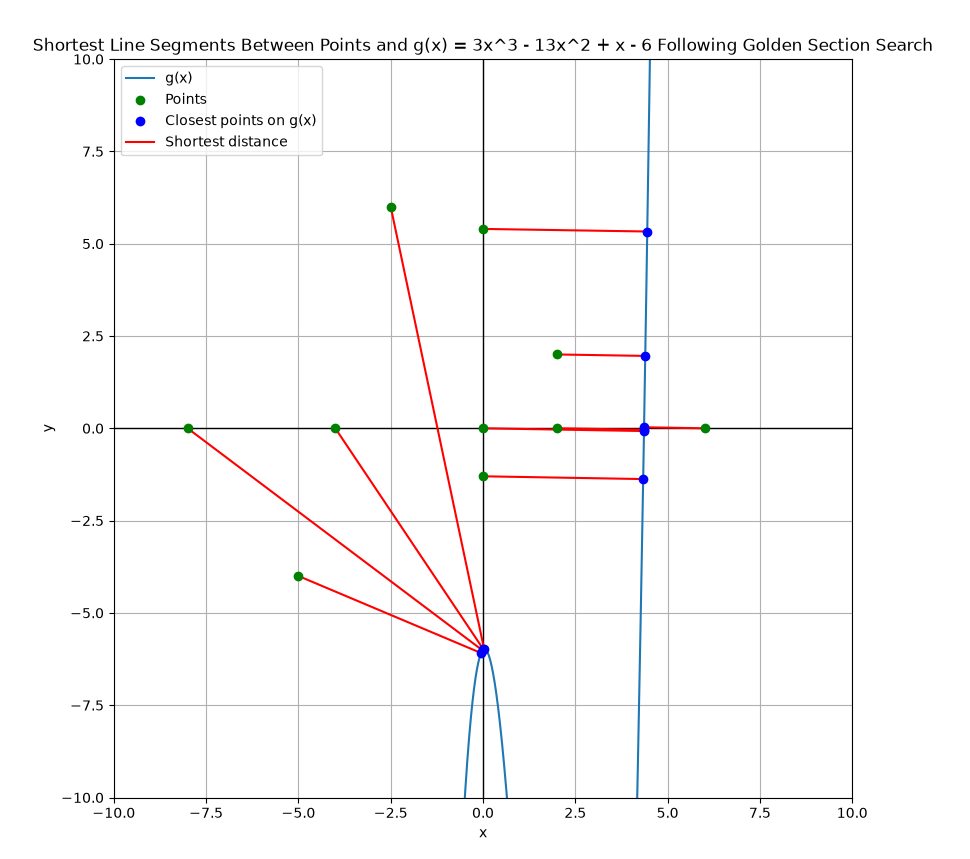
The following are the results of the algorithm for the points above:
| point | initial section | x | d | iterations |
|---|---|---|---|---|
| (0, 0) | [-10, 1] | -0.3537765 | 0.4270942 | 40 |
| (-4, 0) | [-10, 1] | -3.9994968 | 0.4994966 | 40 |
| (-8, 0) | [-10, 1] | -7.9999998 | 0.4999998 | 40 |
| (2, 0) | [-10, 1] | -0.0722603 | 2.2206565 | 40 |
| (6, 0) | [-10, 1] | 0.1388294 | 6.0451534 | 40 |
| (2, 2) | [-10, 1] | -0.4665013 | 3.2329497 | 40 |
| (-2.5, 6) | [-10, 1] | -2.5925338 | 5.5091765 | 40 |
| (0, 5.4) | [-10, 1] | -1.2463238 | 5.1763174 | 40 |
| (0, -1.3) | [-10, 1] | 0.0845087 | 0.0877931 | 40 |
| (-5, -4) | [-10, 1] | -4.9993863 | 4.4999319 | 40 |
Below is a plot of all the points and their shortest distance to e(x):
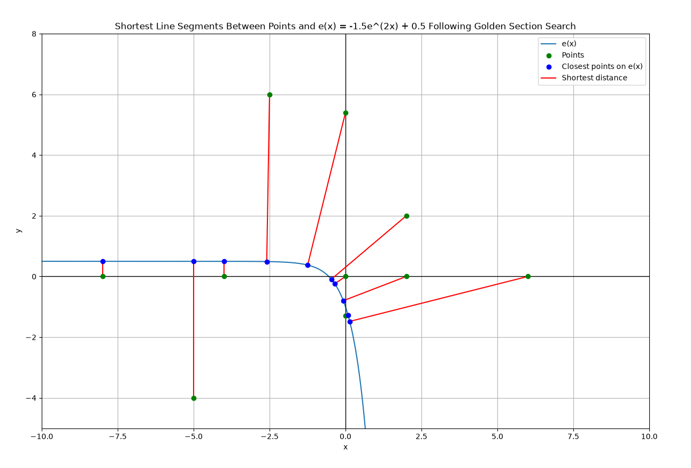
The following are the results of the algorithm for the points above:
| point | initial section | x | d | iterations |
|---|---|---|---|---|
| (0, 0) | [-1, 0] | -0.8526066 | 0.9612000 | 35 |
| (-4, 0) | [-4.5, -3] | -3.3723236 | 0.7104940 | 36 |
| (-8, 0) | [-8, -7] | -7.5556027 | 0.5311493 | 35 |
| (2, 0) | [2, 3] | 2.8526066 | 0.9612000 | 35 |
| (6, 0) | [5, 6.5] | 5.3723236 | 0.7104940 | 36 |
| (2, 2) | [1.5, 2.5] | 2.0353057 | 0.0408389 | 35 |
| (-2.5, 6) | [-6, -4] | -4.8934743 | 3.9561321 | 36 |
| (0, 5.4) | [0, 1.5] | 0.8286160 | 2.5667306 | 36 |
| (0, -1.3) | [-1, 0] | -1.0000000 | 1.7759961 | 35 |
| (-5, -4) | [-3, -2] | -2.5414493 | 4.0019945 | 35 |
Below is a plot of all the points and their shortest distance to c(x):
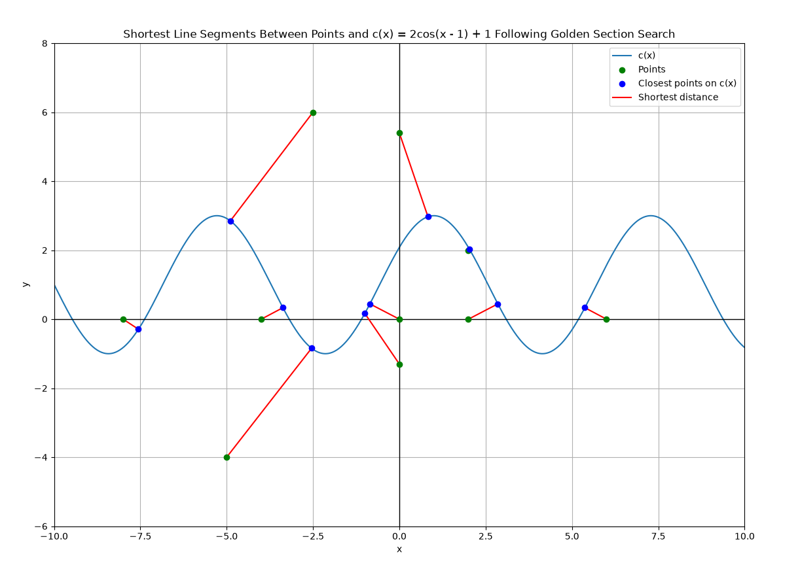
Further, here is another plot showing the iteration steps for point (0, 5.4) to c(x). Because some of the later iterations are very close, the coordinates aren't entirely visible, so they're listed in the table below.
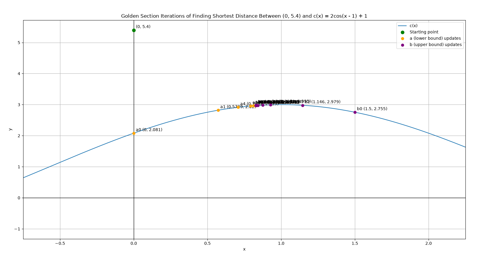
| iteration | section |
|---|---|
| [a0, b0] | [0.0000000, 1.5000000] |
| [a1, b1] | [0.5729490, 1.5000000] |
| [a2, b2] | [0.5729490, 1.1458980] |
| [a3, b3] | [0.5729490, 0.9270510] |
| [a4, b4] | [0.7082039, 0.9270510] |
| [a5, b5] | [0.7917961, 0.9270510] |
| [a6, b6] | [0.7917961, 0.8753882] |
| [a7, b7] | [0.7917961, 0.8434588] |
| [a8, b8] | [0.8115295, 0.8434588] |
| [a9, b9] | [0.8237254, 0.8434588] |
| [a10, b10] | [0.8237254, 0.8359214] |
| [a11, b11] | [0.8237254, 0.8312629] |
| [a12, b12] | [0.8266045, 0.8312629] |
| [a13, b13] | [0.8266045, 0.8294836] |
| [a14, b14] | [0.8277042, 0.8294836] |
| [a15, b15] | [0.8283839, 0.8294836] |
| [a16, b16] | [0.8283839, 0.8290635] |
| [a17, b17] | [0.8283839, 0.8288039] |
| [a18, b18] | [0.8285443, 0.8288039] |
| [a19, b19] | [0.8285443, 0.8287047] |
| [a20, b20] | [0.8285443, 0.8286435] |
| [a21, b21] | [0.8285822, 0.8286435] |
| [a22, b22] | [0.8286056, 0.8286435] |
| [a23, b23] | [0.8286056, 0.8286290] |
| [a24, b24] | [0.8286056, 0.8286200] |
| [a25, b25] | [0.8286111, 0.8286200] |
| [a26, b26] | [0.8286145, 0.8286200] |
| [a27, b27] | [0.8286145, 0.8286179] |
| [a28, b28] | [0.8286145, 0.8286166] |
| [a29, b29] | [0.8286153, 0.8286166] |
| [a30, b30] | [0.8286158, 0.8286166] |
| [a31, b31] | [0.8286158, 0.8286163] |
| [a32, b32] | [0.8286158, 0.8286161] |
| [a33, b33] | [0.8286159, 0.8286161] |
| [a34, b34] | [0.8286159, 0.8286161] |
| [a35, b35] | [0.8286160, 0.8286161] |
The following are the results of the algorithm for the points above:
| point | initial section | x | d | iterations |
|---|---|---|---|---|
| (0, 0) | [0, 6.5] | 0.4480251 | 0.6015738 | 39 |
| (-4, 0) | [0, 6.5] | 0.1256782 | 4.2540124 | 39 |
| (-8, 0) | [0, 6.5] | 0.0786766 | 8.1780791 | 39 |
| (2, 0) | [0, 6.5] | 1.9151763 | 0.3357949 | 39 |
| (6, 0) | [0, 6.5] | 5.9249287 | 0.8927463 | 39 |
| (2, 2) | [0, 6.5] | 2.3370769 | 1.6112036 | 39 |
| (-2.5, 6) | [0, 6.5] | 0.8926371 | 6.9422376 | 39 |
| (0, 5.4) | [0, 6.5] | 1.6066910 | 5.4071353 | 39 |
| (0, -1.3) | [0, 6.5] | 0.0727190 | 0.0734841 | 39 |
| (-5, -4) | [0, 6.5] | 0.0003332 | 5.0003343 | 39 |
Below is a plot of all the points and their shortest distance to l(x):
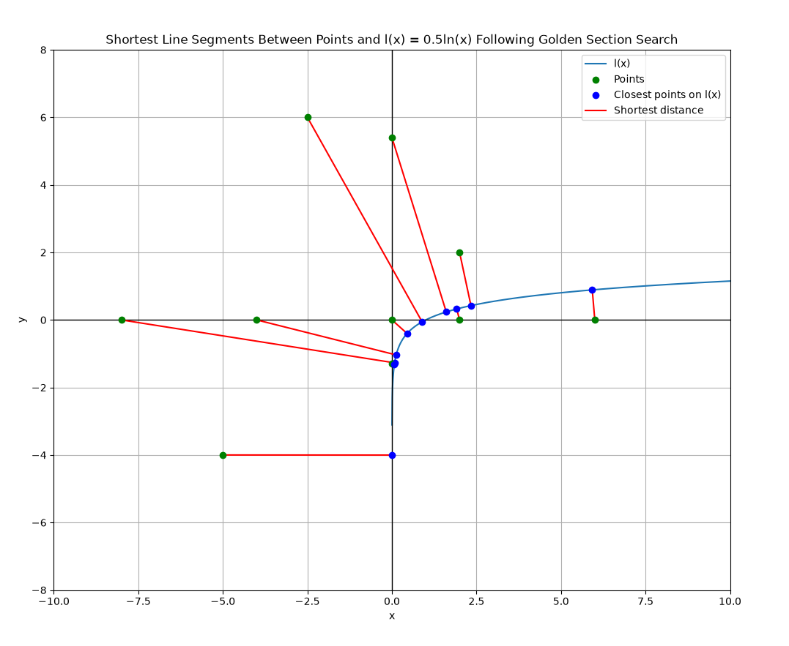
Fit a line and a parabola through the following points by minimizing MSE:
| \(x\) | 0 | 1 | 2 | 3 |
|---|---|---|---|---|
| \(y\) | 0.5 | 1.5 | 3.5 | 7.5 |
Ideally, \(y^*(x) = y(x)\):
\[ \begin{aligned} c_0 + (0)c_1 &= 0.5 \\ c_0 + (1)c_1 &= 1.5 \\ c_0 + (2)c_1 &= 3.5 \\ c_0 + (3)c_1 &= 7.5 \end{aligned} \] \[ \text{Error } e(x) = y^*(x) - y(x) = c_0 + c_1 x - y(x) \]Find \(c_0, c_1\) to minimize \(\rho(c_0, c_1) = \lVert e(x) \rVert_2^2\) (sum of square errors)
\[ \rho = (c_0 - 0.5)^2 + (c_0 + 2c_1 - 3.5)^2 + (c_0 + c_1 - 1.5)^2 + (c_0 + 3c_1 - 7.5)^2 \] \[ \Rightarrow \text{Minimum when } \frac{\partial \rho}{\partial c_0} = \frac{\partial \rho}{\partial c_1} = 0 \] \[ \begin{aligned} \frac{\partial \rho}{\partial c_0} &= 2(c_0 - 0.5) + 2(c_0 + 2c_1 - 3.5) + 2(c_0 + c_1 - 1.5) + 2(c_0 + 3c_1 - 7.5) \\ 0 &= 4c_0 + 6c_1 - 13 \qquad \text{I} \\[1ex] \frac{\partial \rho}{\partial c_1} &= 4(c_0 + 2c_1 - 3.5) + 2(c_0 + c_1 - 1.5) + 6(c_0 + 3c_1 - 7.5) \\ 0 &= 6c_0 + 14c_1 - 31 \qquad \text{II} \end{aligned} \] \[ \text{I:} \quad c_0 = -1.5c_1 + 3.25 \]Sub into II:
\[ \begin{aligned} 0 &= -9c_1 + 19.5 + 14c_1 - 31 \\ c_1 &= 2.3 \end{aligned} \]Sub \(c_1\) into I:
\[ \begin{aligned} c_0 &= -1.5(2.3) + 3.25 \\ &= -0.2 \end{aligned} \] \[ \therefore\ y^*(x) = 2.3x - 0.2 \]Set \(y^*(x) = y(x)\):
\[ \begin{aligned} c_0 + (0)c_1 + (0)^2 c_2 &= 0.5 \\ c_0 + 2c_1 + 4c_2 &= 3.5 \\ c_0 + c_1 + c_2 &= 1.5 \\ c_0 + 3c_1 + 9c_2 &= 7.5 \end{aligned} \] \[ \text{Error } e(x) = y^*(x) - y(x) = c_0 + c_1 x + c_2 x^2 - y(x) \]Find \(c_0, c_1, c_2\) to minimize \(\rho(c_0, c_1, c_2) = \lVert e(x) \rVert_2^2\) (sum of squared errors)
\[ \rho = (c_0 - 0.5)^2 + (c_0 + 2c_1 + 4c_2 - 3.5)^2 + (c_0 + c_1 + c_2 - 1.5)^2 + (c_0 + 3c_1 + 9c_2 - 7.5)^2 \] \[ \Rightarrow \text{Minimum when } \frac{\partial \rho}{\partial c_0} = \frac{\partial \rho}{\partial c_1} = \frac{\partial \rho}{\partial c_2} = 0 \] \[ \begin{aligned} \frac{\partial \rho}{\partial c_0} &= 2(c_0 - 0.5) + 2(c_0 + 2c_1 + 4c_2 - 3.5) + 2(c_0 + c_1 + c_2 - 1.5) + 2(c_0 + 3c_1 + 9c_2 - 7.5) \\ 0 &= 4c_0 + 6c_1 + 14c_2 - 13 \qquad \text{I} \\[1ex] \frac{\partial \rho}{\partial c_1} &= 4(c_0 + 2c_1 + 4c_2 - 3.5) + 2(c_0 + c_1 + c_2 - 1.5) + 6(c_0 + 3c_1 + 9c_2 - 7.5) \\ 0 &= 6c_0 + 14c_1 + 36c_2 - 31 \qquad \text{II} \\[1ex] \frac{\partial \rho}{\partial c_2} &= 8(c_0 + 2c_1 + 4c_2 - 3.5) + 2(c_0 + c_1 + c_2 - 1.5) + 18(c_0 + 3c_1 + 9c_2 - 7.5) \\ 0 &= 14c_0 + 36c_1 + 98c_2 - 83 \qquad \text{III} \end{aligned} \]Solve 3 equation system with calculator:
\[ c_0 = 0.55, \quad c_1 = 0.05, \quad c_2 = 0.75 \] \[ \therefore\ y^*(x) = 0.75x^2 + 0.05x + 0.55 \]The following plot shows both the line and the parabola fitted to the set of points:
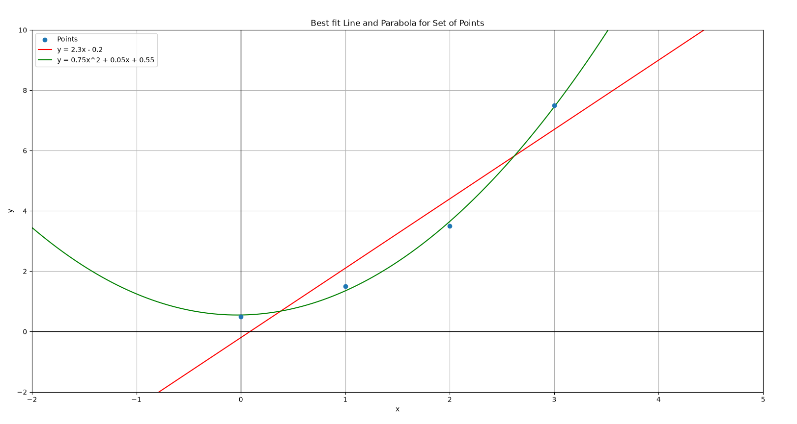
Define the Error Functions:
\[ \begin{aligned} f_0(c_0, c_1) &= c_0 - 0.5 \\ f_1(c_0, c_1) &= c_0 + c_1 - 1.5 \\ f_2(c_0, c_1) &= c_0 + 2c_1 - 3.5 \\ f_3(c_0, c_1) &= c_0 + 3c_1 - 7.5 \end{aligned} \]Define the Jacobian:
\[ J = \begin{bmatrix} \frac{df_0}{dc_0} & \frac{df_0}{dc_1} \\ \frac{df_1}{dc_0} & \frac{df_1}{dc_1} \\ \frac{df_2}{dc_0} & \frac{df_2}{dc_1} \\ \frac{df_3}{dc_0} & \frac{df_3}{dc_1} \end{bmatrix} = \begin{bmatrix} 1 & 0 \\ 1 & 1 \\ 1 & 2 \\ 1 & 3 \end{bmatrix} \]Pseudo-inverse of J:
\[ J^{-1} = (J^T J)^{-1} J^T \] \[ J^T J = \begin{bmatrix} 1 & 1 & 1 & 1 \\ 0 & 1 & 2 & 3 \end{bmatrix} \begin{bmatrix} 1 & 0 \\ 1 & 1 \\ 1 & 2 \\ 1 & 3 \end{bmatrix} = \begin{bmatrix} 4 & 6 \\ 6 & 14 \end{bmatrix} \] \[ (J^T J)^{-1} = \frac{1}{(4)(14) - (6)(6)} \begin{bmatrix} 14 & -6 \\ -6 & 4 \end{bmatrix} = \begin{bmatrix} 0.7 & -0.3 \\ -0.3 & 0.2 \end{bmatrix} \] \[ (J^T J)^{-1} J^T = \begin{bmatrix} 0.7 & -0.3 \\ -0.3 & 0.2 \end{bmatrix} \begin{bmatrix} 1 & 1 & 1 & 1 \\ 0 & 1 & 2 & 3 \end{bmatrix} = \begin{bmatrix} 0.7 & 0.4 & 0.1 & -0.2 \\ -0.3 & -0.1 & 0.1 & 0.3 \end{bmatrix} \]Now,
\[ \begin{bmatrix} c_0 \\ c_1 \end{bmatrix}_{n+1} = \begin{bmatrix} c_0 \\ c_1 \end{bmatrix}_n - J^{-1} f(c_0, c_1) \]First guess: \(c_0 = 0,\ c_1 = 0\)
\[ \begin{aligned} \begin{bmatrix} c_0 \\ c_1 \end{bmatrix}_1 &= \begin{bmatrix} 0 \\ 0 \end{bmatrix} - \begin{bmatrix} 0.7 & 0.4 & 0.1 & -0.2 \\ -0.3 & -0.1 & 0.1 & 0.3 \end{bmatrix} \begin{bmatrix} -0.5 \\ -1.5 \\ -3.5 \\ -7.5 \end{bmatrix} \\ &= \begin{bmatrix} 0 \\ 0 \end{bmatrix} - \begin{bmatrix} 0.2 \\ -2.3 \end{bmatrix} \\ \begin{bmatrix} c_0 \\ c_1 \end{bmatrix}_1 &= \begin{bmatrix} -0.2 \\ 2.3 \end{bmatrix} \end{aligned} \] \[ \begin{aligned} \begin{bmatrix} c_0 \\ c_1 \end{bmatrix}_2 &= \begin{bmatrix} -0.2 \\ 2.3 \end{bmatrix} - \begin{bmatrix} 0.7 & 0.4 & 0.1 & -0.2 \\ -0.3 & -0.1 & 0.1 & 0.3 \end{bmatrix} \begin{bmatrix} -0.7 \\ 0.6 \\ 0.9 \\ -0.8 \end{bmatrix} \\ \begin{bmatrix} c_0 \\ c_1 \end{bmatrix}_2 &= \begin{bmatrix} -0.2 \\ 2.3 \end{bmatrix} - \begin{bmatrix} 0 \\ 0 \end{bmatrix} \\ \begin{bmatrix} c_0 \\ c_1 \end{bmatrix}_2 &= \begin{bmatrix} -0.2 \\ 2.3 \end{bmatrix} \quad \text{Converged} \end{aligned} \] \[ \therefore\ y^*(x) = 2.3x - 0.2 \]Define the Error Functions:
\[ \begin{aligned} f_0(c_0, c_1, c_2) &= c_0 - 0.5 \\ f_1(c_0, c_1, c_2) &= c_0 + c_1 + c_2 - 1.5 \\ f_2(c_0, c_1, c_2) &= c_0 + 2c_1 + 4c_2 - 3.5 \\ f_3(c_0, c_1, c_2) &= c_0 + 3c_1 + 9c_2 - 7.5 \end{aligned} \]Define the Jacobian:
\[ J = \begin{bmatrix} \frac{df_0}{dc_0} & \frac{df_0}{dc_1} & \frac{df_0}{dc_2} \\ \frac{df_1}{dc_0} & \frac{df_1}{dc_1} & \frac{df_1}{dc_2} \\ \frac{df_2}{dc_0} & \frac{df_2}{dc_1} & \frac{df_2}{dc_2} \\ \frac{df_3}{dc_0} & \frac{df_3}{dc_1} & \frac{df_3}{dc_2} \end{bmatrix} = \begin{bmatrix} 1 & 0 & 0 \\ 1 & 1 & 1 \\ 1 & 2 & 4 \\ 1 & 3 & 9 \end{bmatrix} \]Pseudo-inverse of J:
\[ J^{-1} = (J^T J)^{-1} J^T \] \[ J^T J = \begin{bmatrix} 1 & 1 & 1 & 1 \\ 0 & 1 & 2 & 3 \\ 0 & 1 & 4 & 9 \end{bmatrix} \begin{bmatrix} 1 & 0 & 0 \\ 1 & 1 & 1 \\ 1 & 2 & 4 \\ 1 & 3 & 9 \end{bmatrix} = \begin{bmatrix} 4 & 6 & 14 \\ 6 & 14 & 36 \\ 14 & 36 & 98 \end{bmatrix} \] \[ \begin{aligned} (J^T J)^{-1} &= \left[\begin{array}{ccc|ccc} 4 & 6 & 14 & 1 & 0 & 0 \\ 6 & 14 & 36 & 0 & 1 & 0 \\ 14 & 36 & 98 & 0 & 0 & 1 \end{array}\right] \\ &= \left[\begin{array}{ccc|ccc} 1 & 1.5 & 3.5 & 0.25 & 0 & 0 \\ 0 & 5 & 15 & -1.5 & 1 & 0 \\ 0 & 15 & 49 & -3.5 & 0 & 1 \end{array}\right] \\ &= \left[\begin{array}{ccc|ccc} 1 & 1.5 & 3.5 & 0.25 & 0 & 0 \\ 0 & 1 & 3 & -0.3 & 0.2 & 0 \\ 0 & 15 & 49 & -3.5 & 0 & 1 \end{array}\right] \\ &= \left[\begin{array}{ccc|ccc} 1 & 0 & -1 & 0.7 & -0.3 & 0 \\ 0 & 1 & 3 & -0.3 & 0.2 & 0 \\ 0 & 0 & 4 & 1 & -3 & 1 \end{array}\right] \\ &= \left[\begin{array}{ccc|ccc} 1 & 0 & -1 & 0.7 & -0.3 & 0 \\ 0 & 1 & 3 & -0.3 & 0.2 & 0 \\ 0 & 0 & 1 & 0.25 & -0.75 & 0.25 \end{array}\right] \\ &= \left[\begin{array}{ccc|ccc} 1 & 0 & 0 & 0.95 & -1.05 & 0.25 \\ 0 & 1 & 0 & -1.05 & 2.45 & -0.75 \\ 0 & 0 & 1 & 0.25 & -0.75 & 0.25 \end{array}\right] \end{aligned} \] \[ (J^T J)^{-1} J^T = \begin{bmatrix} 0.95 & -1.05 & 0.25 \\ -1.05 & 2.45 & -0.75 \\ 0.25 & -0.75 & 0.25 \end{bmatrix} \begin{bmatrix} 1 & 1 & 1 & 1 \\ 0 & 1 & 2 & 3 \\ 0 & 1 & 4 & 9 \end{bmatrix} = \begin{bmatrix} 0.95 & 0.15 & -0.15 & 0.05 \\ -1.05 & 0.65 & 0.85 & -0.45 \\ 0.25 & -0.25 & -0.25 & 0.25 \end{bmatrix} \]Now,
\[ \begin{bmatrix} c_0 \\ c_1 \\ c_2 \end{bmatrix}_{n+1} = \begin{bmatrix} c_0 \\ c_1 \\ c_2 \end{bmatrix}_n - J^{-1} f(c_n) \]Initial guess: \(c_0 = 0,\ c_1 = 0,\ c_2 = 0\)
\[ \begin{aligned} \begin{bmatrix} c_0 \\ c_1 \\ c_2 \end{bmatrix}_1 &= \begin{bmatrix} 0 \\ 0 \\ 0 \end{bmatrix} - \begin{bmatrix} 0.95 & 0.15 & -0.15 & 0.05 \\ -1.05 & 0.65 & 0.85 & -0.45 \\ 0.25 & -0.25 & -0.25 & 0.25 \end{bmatrix} \begin{bmatrix} -0.5 \\ -1.5 \\ -3.5 \\ -7.5 \end{bmatrix} \\ \begin{bmatrix} c_0 \\ c_1 \\ c_2 \end{bmatrix}_1 &= \begin{bmatrix} 0 \\ 0 \\ 0 \end{bmatrix} - \begin{bmatrix} -0.55 \\ -0.05 \\ -0.75 \end{bmatrix} \\ \begin{bmatrix} c_0 \\ c_1 \\ c_2 \end{bmatrix}_1 &= \begin{bmatrix} 0.55 \\ 0.05 \\ 0.75 \end{bmatrix} \end{aligned} \] \[ \begin{aligned} \begin{bmatrix} c_0 \\ c_1 \\ c_2 \end{bmatrix}_2 &= \begin{bmatrix} 0.55 \\ 0.05 \\ 0.75 \end{bmatrix} - \begin{bmatrix} 0.95 & 0.15 & -0.15 & 0.05 \\ -1.05 & 0.65 & 0.85 & -0.45 \\ 0.25 & -0.25 & -0.25 & 0.25 \end{bmatrix} \begin{bmatrix} 0.05 \\ -0.15 \\ 0.15 \\ -0.05 \end{bmatrix} \\ \begin{bmatrix} c_0 \\ c_1 \\ c_2 \end{bmatrix}_2 &= \begin{bmatrix} 0.55 \\ 0.05 \\ 0.75 \end{bmatrix} - \begin{bmatrix} 0 \\ 0 \\ 0 \end{bmatrix} = \begin{bmatrix} 0.55 \\ 0.05 \\ 0.75 \end{bmatrix} \quad \text{Converged} \end{aligned} \] \[ \therefore\ y^*(x) = 0.75x^2 + 0.05x + 0.55 \]Note that for both the line and parabola fitting, the exact solution is found after the first iteration. This is due to the nature of this problem: The objective functions are all linear combinations of the coefficients of a polynomial, So the Jacobian only consists of constants and doesn't depend on the iterations of the parameters. This is similar to trying to apply the normal Newton-Raphson to a line: the algorithm converges after one step. The initial guess doesn't matter, and will be further shown in the code below.
The algorithm above was written out in Python, and works for any number of points and polynomials of any degree.
The following plot shows the iterations of fitting a line, with the initial guess being c0 = 1, c1 = 1:
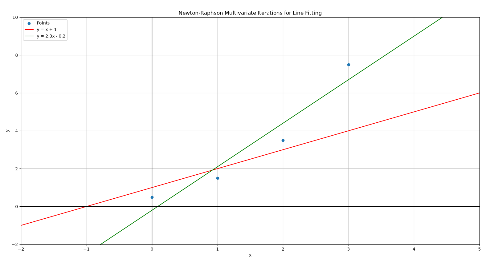
The MSE for this fit is calculated as follows:
\[ \begin{aligned} MSE &= \frac{1}{n} \sum_{i=1}^{n} (y_i^* - y_i)^2 \\ &= \frac{1}{4} \Big[ (2.3(0) - 0.2 - 0.5)^2 + (2.3(1) - 0.2 - 1.5)^2 + (2.3(2) - 0.2 - 3.5)^2 + (2.3(3) - 0.2 - 7.5)^2 \Big] \\ &= \frac{1}{4} (0.49 + 0.36 + 0.81 + 0.64) \\ MSE &= 0.575 \end{aligned} \]This plot shows the iterations of fitting a parabola to the points, with the initial guess being c0 = 1, c1 = 1, c2 = 1:
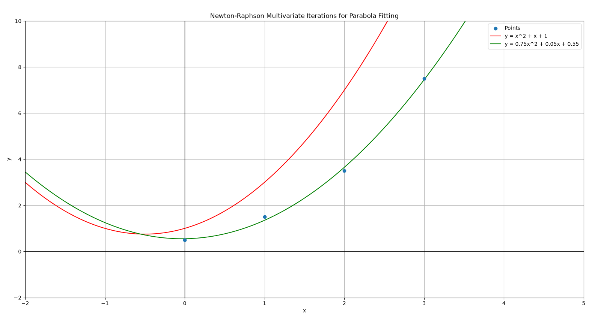
The MSE for this fit is calculated as follows:
\[ \begin{aligned} MSE &= \frac{1}{n} \sum_{i=1}^{n} (y_i^* - y_i)^2 \\ &= \frac{1}{4} \Big[ (0.75(0)^2 + 0.05(0) + 0.55 - 0.5)^2 + (0.75(1)^2 + 0.05(1) + 0.55 - 1.5)^2 \\ &\qquad + (0.75(2)^2 + 0.05(2) + 0.55 - 3.5)^2 + (0.75(3)^2 + 0.05(3) + 0.55 - 7.5)^2 \Big] \\ &= \frac{1}{4} (0.0025 + 0.0225 + 0.0225 + 0.0025) \\ MSE &= 0.0125 \end{aligned} \]The visual plots and MSE both show that the parabola is a better fit for this set of points.
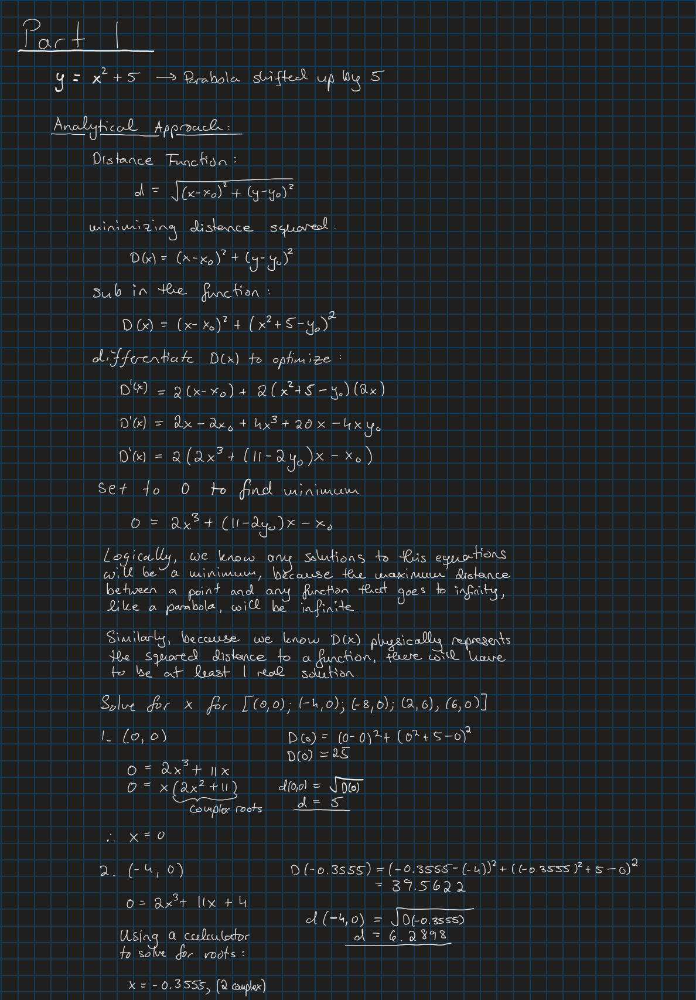
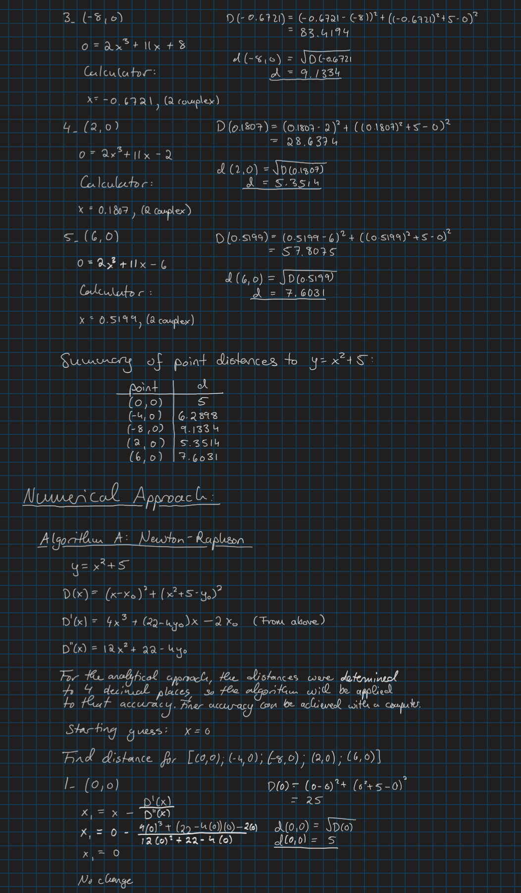
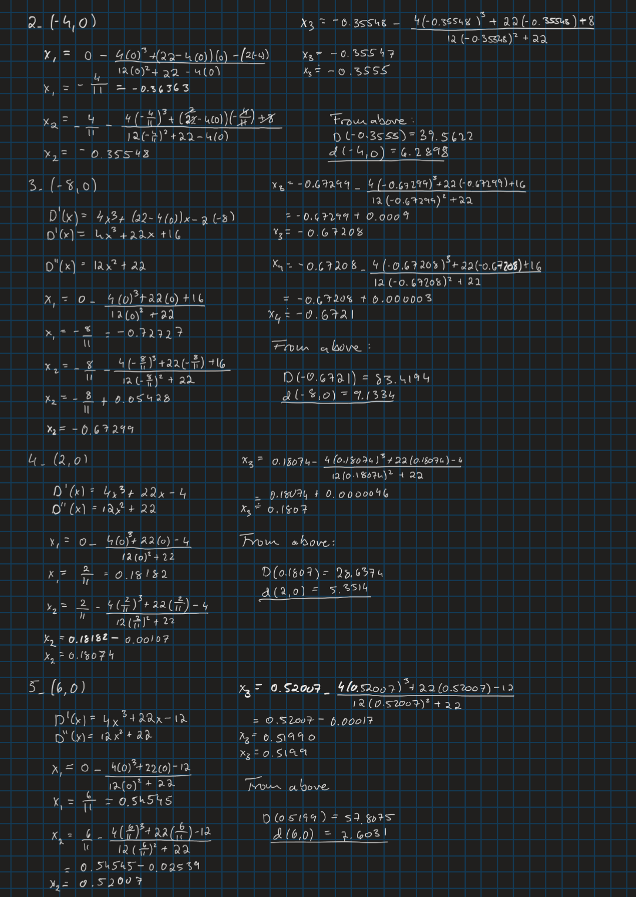
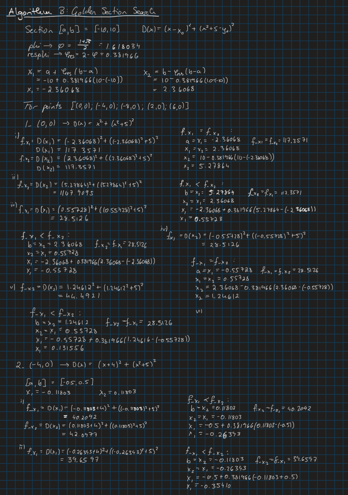
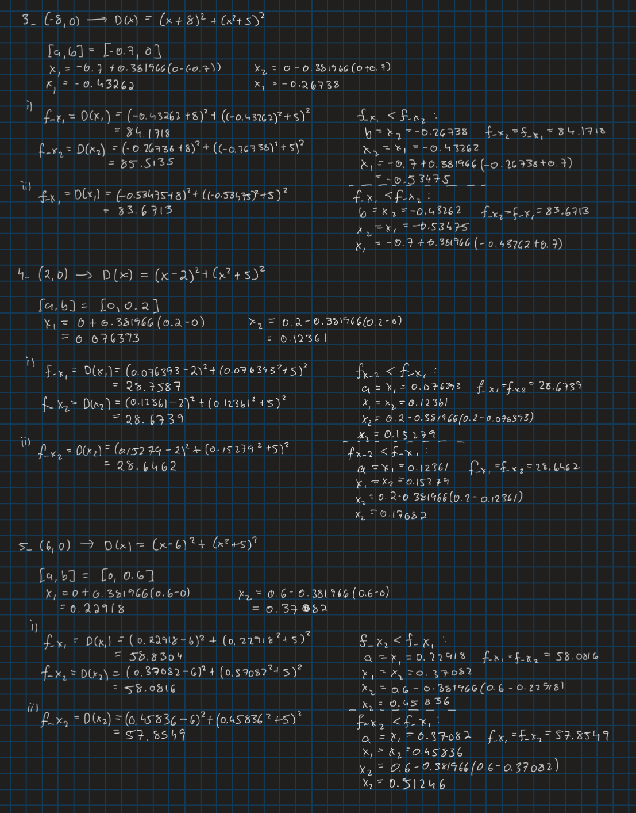
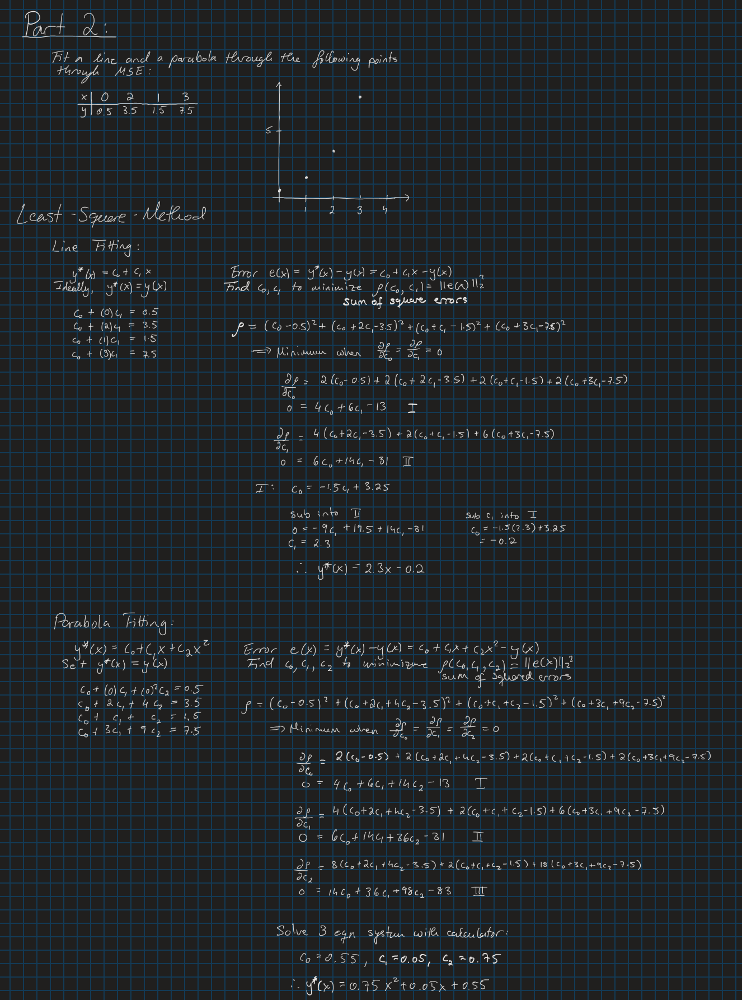
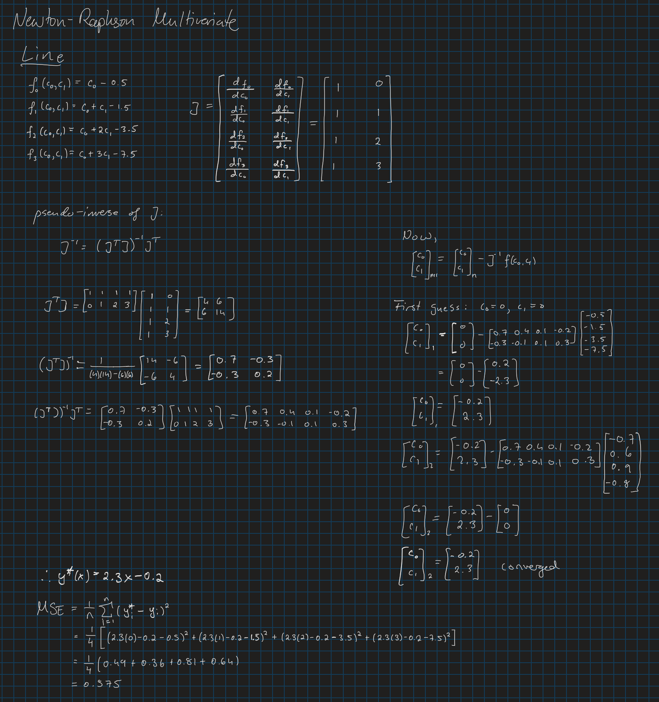
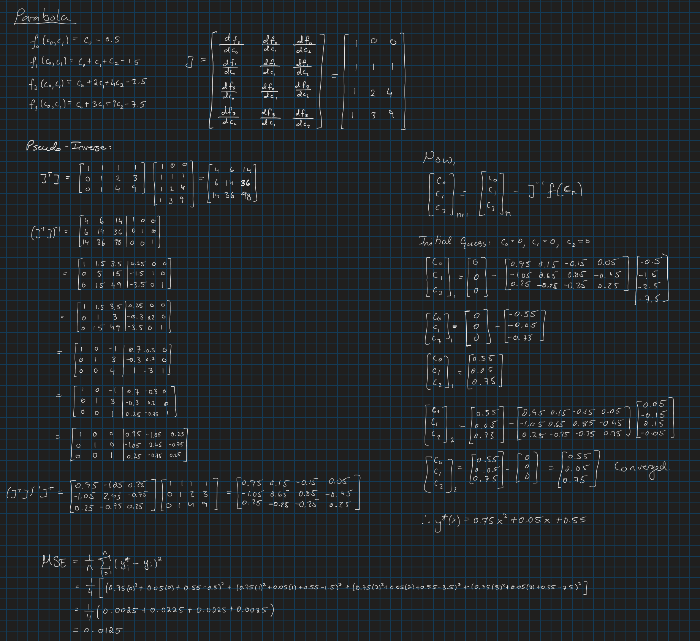